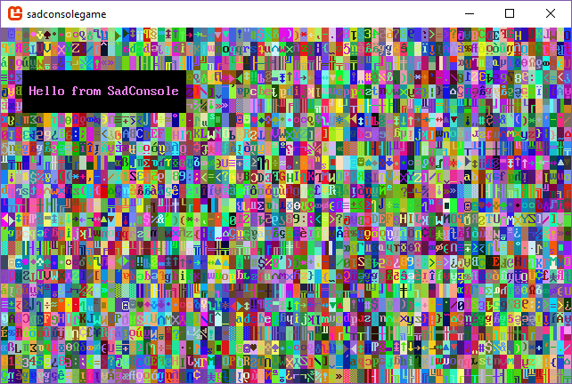

Create a new SadConsole .NET project with the SadConsole templates
This page describes how to create a new project with the SadConsole templates hosted on NuGet. This template creates a .NET project. The .NET SDK includes easy ways to create a project, add references, and build/compile, with or without an editor.
If you're using Visual Studio, follow these steps until told to use Visual Studio.
Prerequisites
Download and install the .NET 6.0 (or later) SDK.
To see what versions you have, run
dotnet --info. If this command fails, your install may have failed, you don't have .NET, or it's not added to your terminal path variable.
Create your working folder
After you have a .NET SDK installed, open up a terminal. If you're unsure how to do that, search the internet for a tutorial.
Once you have a terminal open, navigate to the folder where you'll keep your code. This tutorial just assumes you're in an empty folder waiting to input commands. For example, I already have a coding folder where I store my projects. In my terminal I navigated to my C:\Code\Fun folder, and I'm waiting to input the next series of commands from this article.
Install the templates
Next, install the SadConsole templates:
dotnet new install SadConsole.Templates
Tip
The dotnet commands used here are based on .NET 7. If you're using .NET 6 they're slightly different with dotnet new --install SadConsole.Templates and dotnet new --list sadconsole.
When this command runs, it lists every template installed. You can run a command to list the SadConsole related templates:
dotnet new list sadconsole
You should see output similar to the following:
These templates matched your input: 'sadconsole'
Template Name Short Name Language Tags
-------------------------- --------------- -------- -------------------------------------
SadConsole Demo sadconsole-demo [C#] Console/Roguelike/SadConsole/MonoGame
SadConsole Game (MonoGame) sadconsole-mg [C#] Console/Roguelike/SadConsole/MonoGame
SadConsole Game (SFML) sadconsole-sfml [C#] Console/Roguelike/SadConsole/SFML
The SadConsole Game (MonoGame) template creates a SadConsle game that uses MonoGame and the SadConsole Game (SFML) template creates a game that uses SFML. MonoGame and SFML are the backend renderers for SadConsole. In general, the code you use for SadConsole doesn't care which rendering system you use. However, as your game progresses, which renderer you choose is very important. Currently, it's recommended that you use the MonoGame renderer as it has the following benefits:
- Easier cross-platform targeting.
- Supports 3D rendering: models, scenes, etc.
- Built for .NET coding
SFML is cross-platform, but it takes more work on your side to get that working.
Using Visual Studio
This section is important if you're planning on using Visual Studio to create the project. Visual Studio 2022 automatically imports .NET templates you installed in the previous section. If you want to create a project using Visual Studio, see Create a new SadConsole project with Visual Studio.
Create a project via CLI
Your terminal should be in the game directory you created at the start of this article. Create your project using the dotnet new command:
dotnet new sadconsole.mg -n SadConsoleGame
This command generates a small example game that you can then customize. Run the game with dotnet run from your terminal, and you'll see the following:

Use your favorite IDE or editor to open your newly created project, something like Visual Studio or Visual Studio Code.
Next steps
Now that you have the project created and working, check out the Get Started tutorial series.